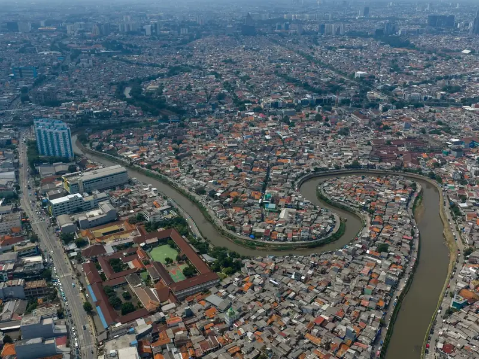

Jasa Sedot WC & Septic Tank di Jakarta Selatan
Melayani rumah tinggal, kos, ruko, dan tempat usaha di wilayah Jakarta Selatan dan sekitarnya.
Layanan yang Tersedia di Jakarta Selatan

Di wilayah Jakarta Selatan, kami melayani permukiman padat dengan akses jalan sempit maupun kompleks perumahan dengan akses kendaraan standar. Ceritakan alamat dan kondisi akses lokasi Anda via WhatsApp agar kami bisa menyiapkan peralatan yang sesuai.
Layanan Terkait
Pertanyaan Umum — Jakarta Selatan
Berapa harga sedot WC di Jakarta Selatan?
Biaya sedot WC NARAYA di Jakarta Selatan menyesuaikan akses lokasi dan volume yang perlu disedot. Estimasi dikonfirmasi lewat WhatsApp sebelum teknisi berangkat.
Berapa lama waktu respon untuk area Jakarta Selatan?
Waktu respon bergantung pada antrian jadwal yang sedang berjalan. Estimasi jadwal diinformasikan segera setelah Anda menghubungi NARAYA via WhatsApp.
Apakah NARAYA melayani gang sempit di Jakarta Selatan?
Ya. NARAYA menggunakan selang panjang untuk lokasi yang tidak bisa dimasuki truk. Sampaikan kondisi akses saat chat agar peralatan disiapkan sesuai kebutuhan.